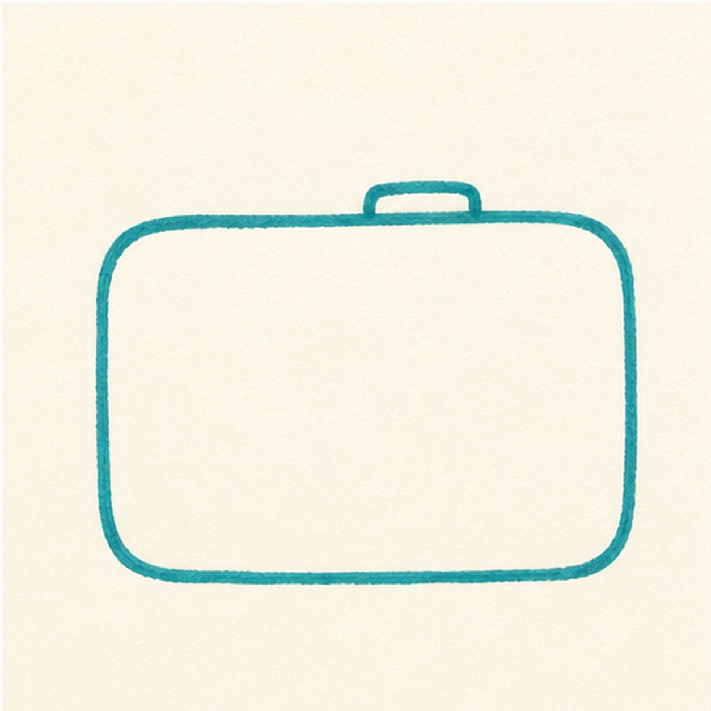
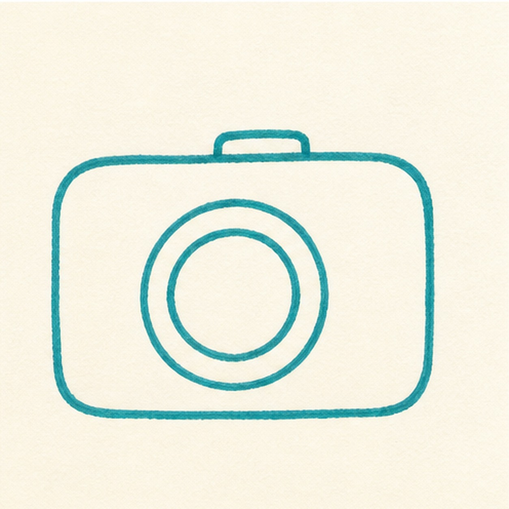
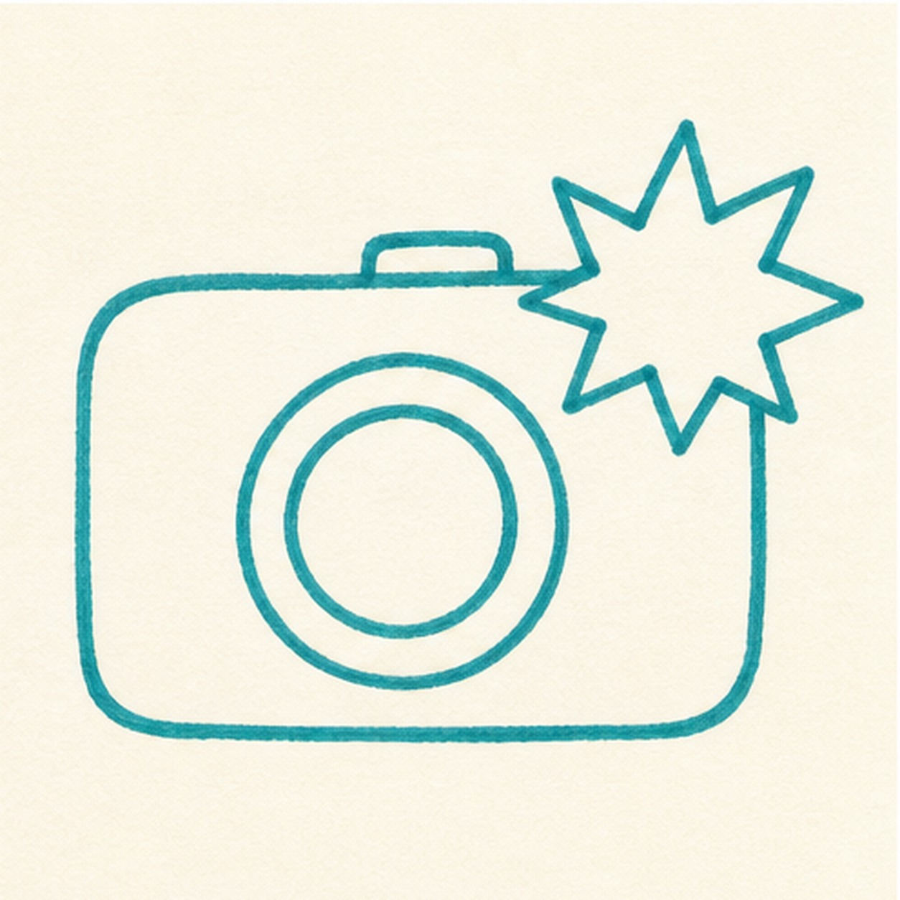
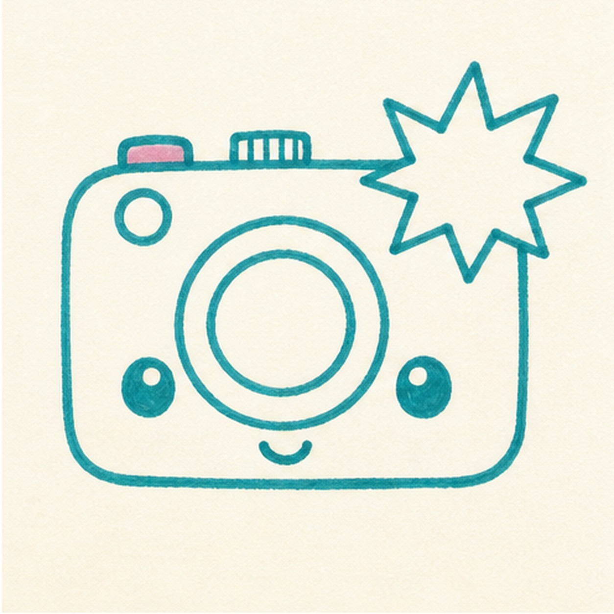
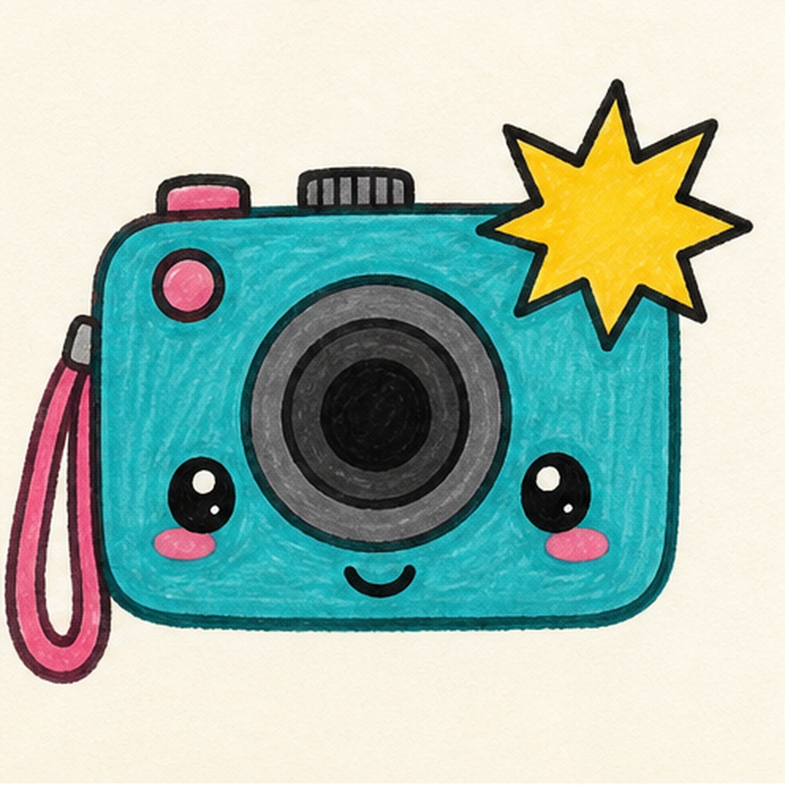

Felt-tip marker mode
Let's doodle a camera flash
Treat this as one playful practice round: sketch the idea loosely, simplify the shapes, then commit with confident marker outlines and bright fills.
-
01

Block the camera body
Draw a wide rounded rectangle for the camera, then add a small bump along the top edge.
Doodle tip: Round the corners more than a real camera. A soft body shape makes the doodle friendlier.
-
02

Pop in the lens
Place a big circle in the middle of the body, then add a smaller circle inside it for the lens ring.
Doodle tip: Keep the lens large. It is the anchor that makes the camera read quickly.
-
03

Spark the flash
Add a starburst flash shape from the upper corner, letting it overlap the camera body a little.
Doodle tip: Use uneven points on the flash. A hand-drawn burst feels livelier than a perfect star.
-
04

Add face and buttons
Draw two small eyes, a tiny smile, a shutter button, and a few simple top controls.
Doodle tip: Leave clear space around the lens so the face does not crowd the main camera shape.
-
05

Fill the snapshot colors
Add the side strap, then fill the body teal, the flash yellow, the strap pink, and the lens gray and black.
Doodle tip: Color with short strokes that follow each shape. Visible marker texture helps the doodle feel handmade.
-
06
Snap the final shine
Retrace the existing edges, deepen the marker fills, and add tiny highlights to the lens and flash shapes you already drew.
Doodle tip: Do not add extra camera parts at the end. This pass should make the snapshot brighter, not busier.